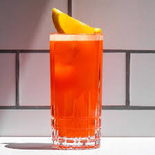

The Garibaldi cocktail is a simple, yet flavorful Italian drink that combines Campari with fresh orange juice, creating a vibrant, bittersweet, and refreshing drink. It’s named after Giuseppe Garibaldi, an Italian nationalist hero, and is often enjoyed as a pre-dinner aperitif.
- Campari 2oz
- Orange juice 4oz
- Orange slice for garnish
- Fill a glass with ice
- Add Campari
- Top with orange juice
- Stir gently
- Garnish with an orange slice